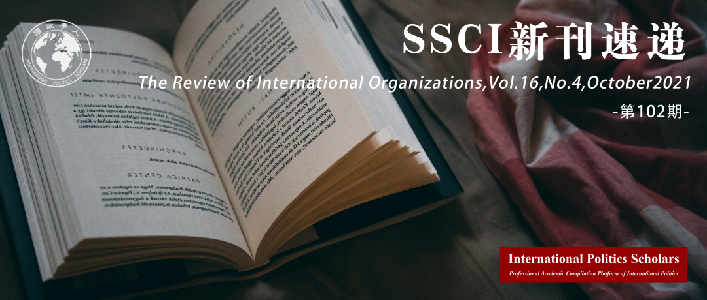

收录于合集 #新刊速递 123个

期刊简介
《国际组织评论》（ The Review of International Organizations ）重点关注国际组织的政策和结构，如WTO、世界银行、北约、世卫组织、欧洲人权法院和联合国。该杂志以现代经济学、政治经济学和国际关系理论为基础，采用定量或定性的方法进行研究。理想情况下，本刊论文应该提出一个新的理论，并提供严格的实证检验这个理论，但本刊也允许两者之间的权衡。

本期目录
1. 对自由世界秩序的合法性挑战:来自联合国演讲的证据（1970-2018）
Legitimacy challenges to the liberal world order: Evidence from United Nations speeches, 1970–2018
2. 投资协议和跨国公司在各国的分散
Investment agreements and the fragmentation of firms across countries
3. 国际法院的议题关注:来自欧洲法院的证据
Issue attention on international courts: Evidence from the European Court of Justice
4. 预期中的经济衰退会扼杀政治预算周期吗
Do expected downturns kill political budget cycles?
5. 竞争性多边主义作为可信的信号：战略上的不一致如何能促使国家间合作
Contested multilateralism as credible signaling: how strategic inconsistency can induce cooperation among states
6. 国际组织对机制复合体的干预
Intervention by international organizations in regime complexes
**
**
7. 吸引力:安全利益如何影响经济制度的成员资格
The forces of attraction: How security interests shape membership in economic institutions
01
对自由世界秩序的合法性挑战:来自联合国演讲的证据（1970-2018）
题目：
Legitimacy challenges to the liberal world order: Evidence from United Nations speeches, 1970–2018
作者： Alexander Kentikelenis，博科尼大学社会与政治科学系 ；Erik Voeten，乔治城大学。
摘要： 近年来，自由主义的国际经济秩序面临着备受瞩目的合法性挑战。本文通过对秩序本身和特定的全球经济机构所面临的修辞挑战的系统分析，将这些挑战置于历史的语境中。根据阿尔伯特·赫希曼(Albert Hirschman)关于退出、发言权和忠诚的经典类型学，我们将1970年至2018年联合国大会一般性辩论期间各国领导人的讲话归类为明示放弃秩序要素、挑战或呼吁改革、明确支持或实际提及合作。令人惊讶的是，我们发现，对自由秩序的明确批评处于历史低点，退出威胁仍然很少。对全球经济机构批评的历史演变进行分析，可以发现冷战时期的局内人与局外人之间的冲突正在转向局内人之间的争论。例如，我们发现，随着各国经济变得更加开放，他们的领导人在冷战期间对全球经济机构表达了更多的支持，但此后他们的支持有所减少。最后，我们展示了各国领导人在联大一般性辩论发言中宣布的公共政策立场，与其政府在有关债务减免的相应改革辩论中的立场之间的一致性。
The liberal international economic order has been facing high-profile legitimacy challenges in recent years. This article puts these challenges in historical context through a systematic analysis of rhetorical challenges towards both the order per se and specific global economic institutions. Drawing on Albert Hirschman’s classic typology of exit, voice and loyalty, we coded leaders’ speeches in the General Debate at the UN General Assembly between 1970 and 2018 as articulating intentions to abandon elements of the order, challenges or calls for reform, unequivocal support, or factual mentions of cooperation. Surprisingly, we find that explicit criticisms towards the liberal order are at an all-time low and that exit threats remain rare. An analysis of the historical evolution of criticisms to global economic institutions reveals a move away from the Cold War insider-outsider conflict towards insider contestation. For example, we find that as countries’ economies become more open, their leaders expressed more support for global economic institutions during the Cold War but less support since. Finally, we demonstrate consistency between the public policy positions leaders announce in UNGA General Debate speeches and their government positions on consequential reform debates on debt relief.
02
投资协议和跨国公司在各国的分散
题目：
Investment agreements and the fragmentation of firms across countries
作者： Timm Betz，慕尼黑工业大学；Amy Pond，慕尼黑工业大学； Weiwen Yin，香港教育大学。
摘要： 我们在投资制度的背景下研究公司的全球所有权结构。投资协议为在海外投资的公司提供了宝贵的优势。但是，这些优势只适用于那些资产所在国与东道国市场签署了协议的国家的公司;对于许多目标市场，公司在投资协议中缺乏保护。我们认为，通过战略性地将子公司设在过境国，公司系统地扩大了获得投资协议的机会。这种特定公司通过过境国获得投资协定的机会也对投资流动产生影响:过境国获得更多的投资流入和流出。此外，协议的影响随着时间和协议伙伴的推移而下降，因为似乎新近受到保护的公司以前是通过子公司获得了保护。利用世界上最大的公司的子公司位置选择，以及公司所有权结构和总投资流动的数据，我们提出了系统的证据与这一论点一致。本文强调了企业全球所有权结构在异质国际规则环境中的重要性，并讨论了投资制度的新分配后果。
We examine the global ownership structure of firms in the context of the investment regime. Investment agreements extend valuable privileges to firms invested abroad. But, these privileges only apply to firms whose assets are owned in a country that has signed an agreement with their host market; firms lack protections under investment agreements for many of their target markets. We argue that, by strategically locating subsidiaries in ‘transit’ countries, firms systematically expand their access to investment agreements. This firm- specific access to investment agreements through transit countries also has implications for investment flows: Transit countries receive more inflows and outflows of investment. Moreover, the impact of agreements declines over time and treaty partners, as seemingly newly protected firms have previously gained coverage through subsidiaries. Drawing on subsidiary location choices of the world’s largest firms, as well as data on firm ownership structures and aggregate investment flows, we present systematic evidence consistent with this argument. The paper highlights the importance of the global ownership structure of firms in an environment of heterogeneous international rules and discusses new distributional consequences of the investment regime.
03
国际法院的议题关注:来自欧洲法院的证据
题目：
Issue attention on international courts: Evidence from the European Court of Justice
作者： Arthur Dyevre，鲁汶大学法学院；Nicolas Lampach，鲁汶大学法学院。
摘要： 我们利用欧洲法院准入规则的变化来探索程序包容性对国际裁判议程的影响。使用自然语言处理方法，我们分析了截至2015年欧洲法院判决的所有领域，映射了跨越时间、程序和诉讼类型的议题流行程度。我们发现，随着时间的推移，更具包容性的撤销和移交程序与更大的议题异质性相关，而包容性较低的侵权程序则显示出更大的议题粘结性和更大的议题稳定性。
We exploit variations in access rules on the European Court of Justice to explore the effect of procedural inclusiveness on the agenda of international adjudicators. Using natural language processing methods, we analyze the entire universe of ECJ decisions up to 2015, mapping issue prevalence across time, procedure and litigant type. We find evidence that the more inclusive annulment and referral procedures are associated with greater issue heterogeneity whereas less inclusive infringement procedure displays greater issue cohesiveness as well as greater issue stability over time.
04
预期中的经济衰退会扼杀政治预算周期吗？
题目：
Do expected downturns kill political budget cycles?
作者： Frank Bohn，内梅亨大学经济系；Jan-Egbert Sturm，苏黎世联邦理工学院瑞士经济学院。
摘要： 政治预算周期（PBC）文献认为，政府在选举年扩大赤字。然而，当预期经济衰退时，会发生什么?政府会允许赤字进一步扩大，还是会采取削减开支和增加税收的措施？当选民预期低于完全自动稳定时，我们的模型显示，机会主义的政府行为会导致更小的赤字，从而对预期的衰退做出顺周期反应。涵盖74个民主国家2000年至2016年的数据证据有力地支持了顺周期的理论预测。此外，当其他情境条件下的PBC效应被纳入实证分析时，预期的下行仍然显著。
The political budget cycle (PBC) literature argues that governments expand deficits in election years. However, what happens when an economic downturn is expected? Will the government allow the deficit to expand even further, or will it resort to spending cuts and tax increases? When voters expect less than full automatic stabilization, our model shows that opportunistic government behavior leads to smaller deficits, thereby responding procyclically to expected downturns. Panel data evidence for 74 democracies covering the period 2000-2016 robustly supports the theoretical procyclicality prediction. Moreover, expected downturns remain significant when other context-conditional PBC effects are included in the empirical analysis.
05
竞争性多边主义作为可信的信号:战略上的不一致如何能促使国家间合作
题目：
Contested multilateralism as credible signaling: how strategic inconsistency can induce cooperation among states
作者： Benjamin Faude，伦敦政治经济学院国际关系系；Michal Parizek，查尔斯大学社会科学学院。
摘要： 本文分析了以大国为首的国家集团奉行“竞争性多边主义(CM)”战略时，国际合作模式会受到怎样的影响。我们将CM概念化为对制度调整谈判僵局的反应，其中CM降低了行动者在短期内从合作中获得的收益。我们证明，从长远来看，CM仍然可以对国际合作产生积极影响，并具体说明何时会出现这种情况。由于与之相关的成本，CM传递了一个可信的信号，表明一群不满的国家决心挑战制度现状。由于这种能力，CM改变了制度和战略环境，在其中进行制度调整谈判。因此，CM为制度间的协调提供了可能性，从而增加了已实现的合作收益。我们通过对多边发展融资中的竞争机制创建和转基因生物国际贸易治理中的机制转移的实证案例研究，探讨了该理论推理的合理性。
This paper analyzes how patterns of international cooperation are affected if a group of states, led by a major power, pursues a strategy of “contested multilateralism” (CM). We conceptualize CM as a reaction to deadlock in institutional adjustment bargaining where CM lowers the gains actors can reap from cooperation in the short run. We demonstrate that, in the long run, CM nevertheless can have positive effects on international cooperation and specify when this is the case. Because of the costs associated with it, CM conveys a credible signal of the resolve of a dissatisfied group of states to contest the institutional status quo. Due to this capacity, CM alters the institutional and strategic environment within which institutional adjustment bargaining takes place. As a result, CM opens up the possibility for inter- institutional accommodation that increases realized cooperation gains. We probe the plausibility of our theoretical reasoning with empirical case studies on competitive regime creation in multilateral development finance and on regime-shifting in the governance of international trade in genetically modified organisms.
06
国际组织对机制复合体的干预
**
**
题目：
Intervention by international organizations in regime complexes
作者： Matias E. Margulis，英属哥伦比亚大学公共政策与全球事务学院。
摘要： 本文指出，国际组织（IOs）存在一种以前不为人知但很重要的自我导向政治行为，本文称之为干预。当一个组织秘书处的行动意图是改变在一个机制复合体中一个部分重叠的组织的预期决定时，干预就发生了。干预是IOs的一种独特行为，它既不同于IOs之间争夺授权、资源和政策影响力的官僚竞争，也不同于为实现共同监管目标和提高绩效的合作。本文通过对粮食安全体制中三个说明性案例的分析来探讨干预的合理性，这些案例显示了联合国粮食及农业组织（FAO），世界粮食计划署（WFP）和联合国人权高级专员办事处(OHCHR)旨在改变世界贸易组织（WTO）的决策而采取的自我导向的政治行动。本文确定了三种不同的干预战略——动员国家、公开羞辱和援引替代性法律框架——在这些战略中，IOs利用其物质、理念和象征能力来影响决策。这些不是在自己的机构内，而是在其他机构，在一个他们没有直接控制的机制复合体中的重叠组织内。
This article identifies the existence of a previously unknown but important type of self-directed political behavior by International Organizations (IOs) that I term intervention. Intervention occurs when an IO secretariat acts with the intention of altering an anticipated decision at a partially-overlapping IO in a regime complex. Intervention is a distinct type of behavior by IOs that differs from either bureaucratic competition among IOs for mandates, resources and policy influence, or cooperation to achieve joint regulatory goals and enhance performance. I probe the plausibility of intervention through an analysis of three illustrative case studies in the regime complex for food security showing self-directed political actions by the secretariats of the Food and Agriculture Organization (FAO), World Food Programme (WFP) and Office of the High Commissioner for Human Rights (OHCHR) directed at altering decision-making by states at the World Trade Organization (WTO). I identify three distinct intervention strategies – mobilizing states, public shaming and invoking alternative legal frameworks – in which IOs utilize their material, ideational and symbolic capabilities to influence decision-making not within their own institutions, but at other, overlapping organizations in a regime complex over which they have no direct control.
07
吸引力:安全利益如何影响经济制度的成员资格
**
**
题目：
The forces of attraction: How security interests shape membership in economic institutions
作者： Christina L. Davis，哈佛大学国际事务中心；Tyler Pratt，耶鲁大学。
摘要： 安全与经济交流之间的联系是公认的。但是地缘政治利益在什么时候以及在多大程度上对经济合作起作用？目前的工作侧重于双边贸易和援助，我们研究了地缘政治如何影响多边经济组织的成员资格。我们证明，当国家基于外交政策的相似性欢迎或排斥国家时，就会发生实质性的歧视。不顾非歧视的多边准则，片面选择成员会使经济合作政治化。我们通过分析1949年至2014年231个经济组织成员模式的新数据，检验了制度成员的地缘政治根源。有证据表明，在组织的形成和扩大阶段，安全纽带决定了哪些国家加入和留在组织中。我们使用有限混合模型来比较经济和地缘政治考虑的相对力量，发现地缘政治结盟占经济制度成员决策的近一半。
The link between security and economic exchange is widely recognized. But when and how much do geopolitical interests matter for economic cooperation? While existing work focuses on bilateral trade and aid, we examine how geopolitics shapes membership in multilateral economic organizations. We demonstrate that substantial discrimination occurs as states welcome or exclude states based on foreign policy similarity. Biased selection of members can politicize economic cooperation despite multilateral norms of non-discrimination. We test the geopolitical origins of institutional membership by analyzing new data on membership patterns for 231 economic organizations from 1949 – 2014. Evidence shows that security ties shape which states join and remain in organizations at both the formation and enlargement stages. We use a finite mixture model to compare the relative power of economic and geopolitical considerations, finding that geopolitical alignment accounts for nearly half of the membership decisions in economic institutions.
编译 | 丁伟航 朱文菡
审校 | 朱文菡
排版 | 彭雯昕 黄伊蕾

国政学人
支持学术公益与知识传播
微信扫一扫赞赏作者 __赞赏
已喜欢，对作者说句悄悄话
取消 __
发送给作者
发送
最多40字，当前共字
上一页 1/3 下一页
长按二维码向我转账
支持学术公益与知识传播
受苹果公司新规定影响，微信 iOS 版的赞赏功能被关闭，可通过二维码转账支持公众号。